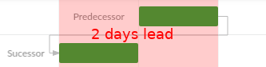
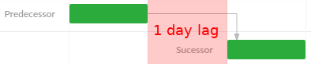
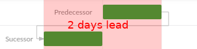

An event can be scheduled either automatically (default) or manually. This is defined by the manuallyScheduled event flag.
The difference between these two types is that automatically scheduled events are affected by the automatic rescheduling process
while manually scheduled are not.
Manually scheduled events are meant to be adjusted manually by a user.
The Scheduler Pro scheduling engine updates start and end dates of automatically scheduled events based on their constraints_, _dependencies and working time settings.
This means that the startDate and endDate are revalidated and
might be recalculated as soon as the event is added or loaded to a project.
Events having no incoming dependencies nor constraints tend to keep their start date intact.
The only factor that could cause such events automatic rescheduling is changes affecting their working time
(happens for example when the event calendar or assignments are changed).
When an Event changes, its linked events (successors) will be rescheduled automatically.
How dependent events will be updated after a modification depends on the dependency type.
The Scheduler Pro engine supports the following four types of dependencies:
The default type of a dependency is "Finish-to-Start" (FS). This type of dependency restricts the dependent event
to not start earlier than the end date of the preceding event.
Lead (or "negative lag") will accelerate the succeeding event by the number of time units specified.

Please note, the lag value specifies the amount of working time. The
calendar controlling which time to use is defined by the calendar field. By
default, the successor calendar is used.
An event constraint defines boundaries for the schedulable date range of an event and it is taken into account
when the engine schedules the event.
A constraint is a combination of two event properties: constraintType and constraintDate.
The date range specified by a constraint, restricts the event start / end dates to be not earlier than,
not later than or equal to the provided constraintDate.
When an event is manually dragged by a user in a Scheduler Pro chart,
the Scheduler Pro enforces the position by setting a constraint on the event.
It uses Start no earlier than (SNET) constraint when the event is moved by changing its start date (and Finish no earlier than (FNET) constraint when the event is moved by changing its end date).
The way a constraint affects an event depends on its type. There are two group of
constraints available:
There are two constraints in this group Must start on (MSO) and Must finish on (MFO).
They force an event to start / finish exactly on the date provided.
These constraints share the same priority with event dependencies. They all work together respecting the event working time:
Start no earlier than (SNET) - restricts the event to start on or after the specified date.
Finish no earlier than (FNET) - restricts the event to finish on or after the specified date.
Start no later than (SNLT) - restricts the event to start before (or on) the specified date.
Finish no later than (FNLT) - restricts the event to finish before (or on) the specified date.
Effectively, the event start/end dates are calculated as aggregated values taking into account both dependencies
and such constraints. The earliest start date for an event is computed as the latest of the earliest start allowed by
its constraint and the earliest start allowed by its dependencies.
An example: Event A has two incoming dependencies which don't allow it to start earlier than 01/18/2017 and the event
has a SNET constraint which forces it to start not earlier than 01/17/2017. In this case, the resulting earliest
start date of the event is 01/18/2017. If we change the constraint date to 01/19/2017 the resulting earliest start
date will become 01/19/2017.
Scheduler Pro event scheduling
Manually and automatically scheduled events
An event can be scheduled either automatically (default) or manually. This is defined by the manuallyScheduled event flag. The difference between these two types is that automatically scheduled events are affected by the automatic rescheduling process while manually scheduled are not. Manually scheduled events are meant to be adjusted manually by a user.
Automatic event scheduling
The Scheduler Pro scheduling engine updates start and end dates of automatically scheduled events based on their constraints_, _dependencies and working time settings. This means that the startDate and endDate are revalidated and might be recalculated as soon as the event is added or loaded to a project.
Events having no incoming dependencies nor constraints tend to keep their start date intact. The only factor that could cause such events automatic rescheduling is changes affecting their working time (happens for example when the event calendar or assignments are changed).
Propagating changes through event dependencies
When an Event changes, its linked events (successors) will be rescheduled automatically.
How dependent events will be updated after a modification depends on the dependency type. The Scheduler Pro engine supports the following four types of dependencies:
Finish-to-Start
The default type of a dependency is "Finish-to-Start" (FS). This type of dependency restricts the dependent event to not start earlier than the end date of the preceding event.
Start-to-Start
With this dependency type, the succeeding event is delayed to not start earlier than the start of the preceding event.
Finish-to-Finish
The succeeding event cannot finish before the completion of the preceding event.
Start-to-Finish
The finish of the succeeding event is constrained by the start of the preceding event. The successor cannot finish before the predecessor starts.
Dependency lead and lag
A dependency can have a lag (or lead) value which can delay the succeeding event by the number of lag units specified.
Lead (or "negative lag") will accelerate the succeeding event by the number of time units specified.
Please note, the lag value specifies the amount of working time. The calendar controlling which time to use is defined by the calendar field. By default, the successor calendar is used.
Event constraint effect on the scheduling
An event constraint defines boundaries for the schedulable date range of an event and it is taken into account when the engine schedules the event.
A constraint is a combination of two event properties: constraintType and constraintDate. The date range specified by a constraint, restricts the event start / end dates to be not earlier than, not later than or equal to the provided constraintDate.
When an event is manually dragged by a user in a Scheduler Pro chart, the Scheduler Pro enforces the position by setting a constraint on the event. It uses Start no earlier than (SNET) constraint when the event is moved by changing its start date (and Finish no earlier than (FNET) constraint when the event is moved by changing its end date).
The way a constraint affects an event depends on its type. There are two group of constraints available:
Inflexible constraints
There are two constraints in this group Must start on (MSO) and Must finish on (MFO). They force an event to start / finish exactly on the date provided.
Semi-flexible constraints
These constraints share the same priority with event dependencies. They all work together respecting the event working time:
Effectively, the event start/end dates are calculated as aggregated values taking into account both dependencies and such constraints. The earliest start date for an event is computed as the latest of the earliest start allowed by its constraint and the earliest start allowed by its dependencies.
An example: Event A has two incoming dependencies which don't allow it to start earlier than 01/18/2017 and the event has a SNET constraint which forces it to start not earlier than 01/17/2017. In this case, the resulting earliest start date of the event is 01/18/2017. If we change the constraint date to 01/19/2017 the resulting earliest start date will become 01/19/2017.
Working time effect on the scheduling
An event working time is defined by combination of its own calendar and the assigned resource calendars. Technically an event can be performed in periods calculated as intersection of the event calendar and some of assigned resource calendars.
The above means that an event could get rescheduled when it: